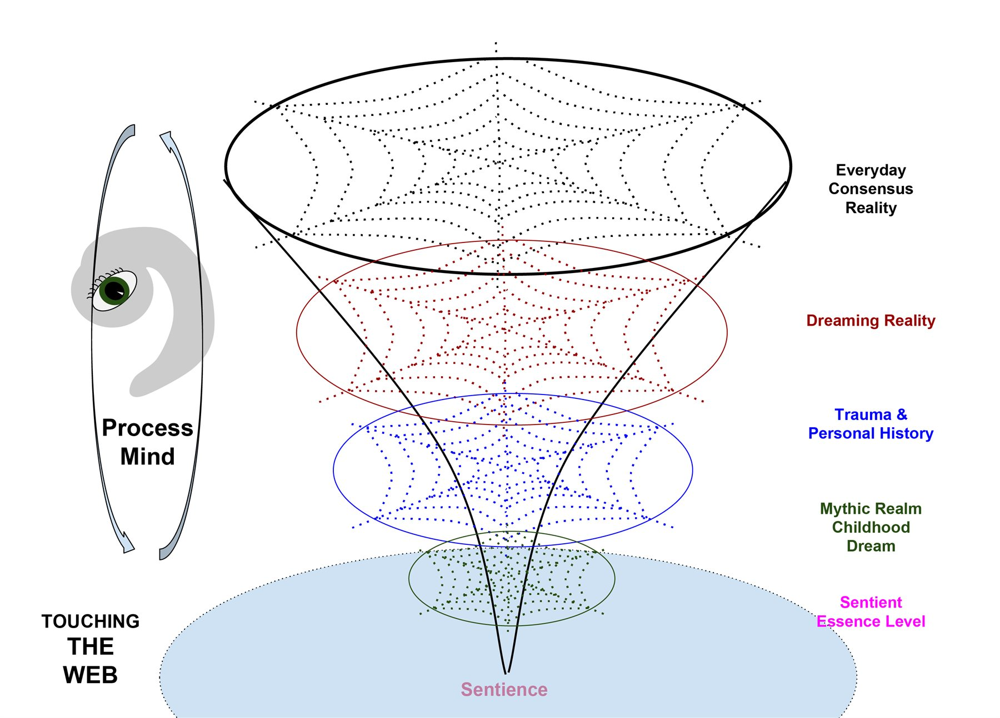

What it is, and how it connects or differs from other ways
I have been practicing Process Work since 1991, when I began to study with Dr Arnold Mindell, Jean-Claude and Arlene Audergon in the United Kingdom. Together with them, I helped to establish the Research Society for Process Oriented Psychology, known as RSPOPUK. I qualified as a Diplomate in 1996 and have been registered with the UKCP since then. My longer-term teachers and supervisors have included Gary Reiss, Dawn Menken, Julie Diamond, and Max Schupbach.
Process Work is a non-pathological, nature-oriented, and awareness-based approach — and fundamentally, it is a heartful approach to human and non-human experience.
Human beings have a deep tendency to identify in particular ways. We might identify as roles — parent, professional, partner — or we might identify with personality traits: I am confident, I am shy, I am creative, I am logical. We identify as genders, with capabilities, with woundedness or strength. Some of these identifications are conscious and deliberate. Others are entirely unconscious — patterns we live out without noticing them.
Many of these identifications are organized by society, culture, family, and lived experience. If we have experienced being disempowered or unheard, we may unconsciously develop identifications that compensate — we might become the strong one, the caretaker, the person who takes up space and asserts themselves. We become attached to these ways of being; they feel like who we are.
But these identifications are not only in the mind. They are held throughout the body — in posture, in movement, in the quality of our voice, in how we dress and present ourselves. They show up in our communication style, in the force of our presence, in the signals we send without speaking. A person who identifies as confident carries themselves differently than someone who identifies as uncertain. The identification is not abstract; it is lived.
But here is where Process Work begins its real inquiry. Alongside the identifications we carry consciously, there are always other aspects of experience, other qualities and potentials, that we do not identify with. These are what we call secondary processes — the things that are outside the circle of our identity.
In the most extreme forms, we project these secondary aspects away from ourselves entirely. We see them as belonging to someone else, to the world around us, to nature, to animals, to those we are in conflict with. When we believe we are separate from what we disown, we create the conditions for struggle.
At the boundary between our identified self and the non-identified aspects lies what we call the edge. An edge is a conscious or unconscious belief system that holds our identity in place. It is like the skin of our selfhood — it contains us and separates us from what we consider not-us.
These edges are constructed from many things. They include verbal beliefs and stories — statements we remember being told, negative messages from parents or teachers, conclusions we drew about who we are and what is possible for us. But edges are also held somatically, in the body — as patterns of tension, as held breath, as ways of tensing or recoiling when we approach certain experiences. Body memory is an essential part of how identity is maintained.
The heart of Process Work is learning to follow experience as it unfolds, moment by moment. This is guided by something called feedback.
Feedback is not simply agreement or disagreement. It is an energetic response — a signal that someone, or a group, or a relationship is responding positively or negatively to the direction of travel. Real consent and ethical work require attending to feedback across all the ways human beings communicate — not just words.
The Process Work facilitator's role is to notice this feedback and to be led by it. This mirrors what we see in natural systems. Feedback is what guides ecological systems, weather systems, the body's own healing. When we ignore feedback persistently, it amplifies — it returns to us in other forms, often with greater force.
Process Work operates through what we call channels — the sensory and relational pathways through which experience flows.
The primary channels include sight, hearing, movement, proprioception (our sense of the body in space), and somatic experience. But there are also composite channels: the relationship channel, through which information flows between people; the world or environmental channel, through which we sense and are shaped by the more-than-human world around us.
This multi-channel approach means that Process Work can meet people wherever they are, whatever is alive and trying to come through in that moment. We might move fluidly between working with words, body sensations, sounds, visual symbols, or the imaginal realm.
Process Work recognizes that experience unfolds across three distinct yet interwoven levels of reality, each illuminated by awareness in the moment.

The level we know most intimately. Here, we experience ourselves as separate individuals with distinct identities, roles, and positions. It defines the norms and moral expectations within families, cultures, and societies.
The danger is that consensus reality can become too narrow. When one group's consensus reality is imposed as the only reality, other ways of being are rendered invalid.
More fluid. Boundaries are permeable. In Process Work, dreaming is not confined to nighttime. It comes through in body symptoms, unexpected hesitations, synchronicities, or the natural world.
Intelligence is everywhere — in animals, in ecosystems, in the patterns of nature itself. life itself, in its unfolding creativity, is the most fundamental intelligence.
The level before differentiation arises. Pre-form, pre-part, a realm of pure quality before it has landed as a figure or taken shape. Working at the level of sentience can bring a quality of stillness or coherence.
At the deepest level, underlying all three realities, is what Arnold Mindell called Process Mind — the awareness that is present across and within all these levels of reality.
This page offers an introduction to Process Oriented Psychology as I understand and practice it. Process Work is vast — it weaves together Jungian depth psychology, somatic awareness, indigenous wisdom, systems thinking, and a commitment to awareness and presence moment by moment.
If you would like to know more, or to explore Process Work with me, please reach out.
Let's connect